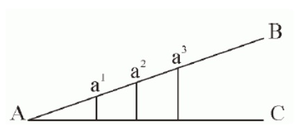
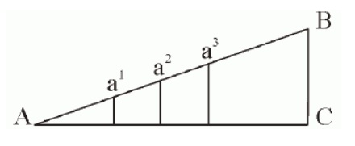

Беседа 803 от 3877 · Беинса Дуно
Светлина и знание. Музика
Шеста лекция
23 ноември 1924 г.
– Любовта ражда Доброто.
– Доброто носи за нас Живот, Светлина и Свобода!
Размишление
За следния път тема №4: „Основните мисли от втората тазгодишна лекция.“
Трябва да знаете, че във всяка лекция има само три основни мисли. Всяка една от тия мисли може да се раздели на още три. Те могат поотделно да се разделят по на още три и т.н. Но във всяка лекция има само три основни мисли: само толкова ще търсите, не повече. Туй ще ви служи като правило.
Ще ви запитам сега: коя е основната мисъл на живота? Или коя е основната мисъл в живота на човека? Вие ще кажете навярно, че основната идея в живота на човека е Бог. Не, при сегашното състояние за човека на Земята основната мисъл не е Бог. Туй не е отричане, но казвам: основната мисъл, която трябва да ви занимава, това е мисълта за вярата, а вярата носи със себе си Знание. Вие ще намерите Бога само по пътя на Знанието. Аз не говоря за обикновеното знание, но за Знанието, което хвърля Светлина в умовете на хората и ги просвещава. За да разгледате една вещ под микроскоп, трябва да имате достатъчно светлина. И тогава, колкото е по-малък предметът, толкова повече светлината трябва да се увеличи. Следователно за отвлечените идеи се изисква по-силна светлина, по-голямо знание.
И тъй, вие трябва да имате знания! Съвременните хора считат за знание да прочетат една книга или да я научат наизуст. Това не е знание – това е помнене. Ти прочетеш една книга и казваш: „Аз зная това нещо.“ – Не, това е помнене. Ти си събрал в торбата си от разни места това-онова и после казваш, че знаеш. Знанието е резултат на човешкия ум, който трябва да роди нещо от себе си. Умът на човека трябва да се запали, т.е. сам по себе си трябва да даде светлина на човешката душа. Най-първо ви е необходимо знание, което от старо време още наричали знание на разумното сърце. Аз съм ви говорил и друг път, че ви трябва един ум, не обикновен, какъвто животните имат, но разумен. Обикновеният ум не разбира нещата в Природата.

Сега да обясним въпроса за ъгъла ВАС, както е поставен във физическия свят. Това пространство е една отворена долина, в която се вливат малки рекички. Значи може да се предполага, че тук, при точка А, подпушванията стават по-лесно, понеже напорът или напрежението, което иде отвън, е голямо. Следователно тия води, колкото по-големи стават, толкова по-големи са и перпендикулярите: толкова и енергията, която трябва да употребим, за да подпушим водата, ще бъде по-голяма.
И тъй, малките погрешки се поправят по-лесно в началото, отколкото в тяхното отдалечаване. Значи още в самото си начало всяка погрешка представлява един отворен ъгъл. Затова още в самото начало вие можете да определите с каква сила ще можете да изправите известна ваша погрешка. Вие можете да съставите едно математическо уравнение, според което ще изчислите, че колкото повече перпендикулярът се продължава, толкова по-мъчно се изправят погрешките. Значи страните АВ и АС на ъгълаВАС в дадения случай са елементи, които показват по кой начин можем да изправяме своите погрешки. Същевременно ъгълът ВАС има и друго значение: той е уред, който показва интелектуалната сила, с която всеки човек разполага в даден случай. Следователно вашата интелигентност ще зависи от перпендикуляра, спуснат от АВ към АС. Ако турите върха А на ъгъла ВАС под ухото и теглите линията АВ към горната част на носа, а другият лъч АС да минава под носа, ще се образува даденият ъгъл ВАС. Следователно в този ъгъл ще поместите всички същества, които ще имат разни перпендикуляри, спуснати от челото към долната част на носа. Тяхната интелигентност ще зависи от дължината на тези перпендикуляри. Колкото е по-голям този перпендикуляр, толкова и интелигентността е по-голяма; колкото е по-малък перпендикулярът, толкова и интелигентността е по-малка. Тъй че интелигентността на човека не се определя от дължината на носа, а от дължината на перпендикуляра, спуснат от челото надолу. Носът показва само относителна интелигентност. Ъгълът ВАС означава една погрешка, направена на физическия свят. Тогава в Умствения свят трябва да се изработи един начин, по който ще можем да изправим своята погрешка. Да кажем, че някой човек се е напил, но друг го удря по носа и го поврежда. Пияният не знае законите, с които ще може да възстанови тия клетки на носа, и затова ще ходи с наранен нос. Но явява се един учен човек, който разбира от присаждане и ще поправи носа му. Той ще определи каква част кожа трябва да се отреже от ръката му или от гърба му, за да направи носа. Но само умният човек може да направи това.
Когато перпендикулярите излязат извън линиите АВ и АС, грешката е непоправима вече. Тия линии са крайният предел, додето дадена погрешка може да се проточи, а също тъй крайната възможност, при която тази погрешка може да се поправи. Затова за всяка погрешка, направена на физическия свят, се изисква един период от четири поколения, за да се изправи. Поправянето не може да се продължи повече от четири рода. Точките а1, а2, а3 и т.н. са периоди на живота: двадесет години, четиридесет години, шестдесет години, осемдесет – сто години; това са възможности да се поправи тази погрешка.
Да допуснем, че вашият нос, наместо да върви отвесно и да разделя лицето на две симетрични части, е малко накривен или наляво, или надясно. Защо е така? Ще кажете: „Тъй ме е родила майка ми“ или „Законът в Природата е такъв.“ – Не, Природата е направила нещата отлично. И ако вашият нос е крив, причината за това е във вас. Коя е причината, че носът ти се е изкривил? Казваш: „С крив нос не мога ли да живея?“ – Можеш, но все ще ти липсва нещо. И ако вие останете с този крив нос цели четири поколения, без да поправите тази погрешка навреме, върху последното поколение ще дойдат много нещастия. Защото удовете, които сега имате – веждите, носа и др. – това са уреди, с които ще си служите, за да познавате вашия вътрешен живот. Например вие имате един уред – топломер, с който си служите в някои случаи. Така също и носът е един уред за вас, който, както компасът, ви показва накъде да се движите. Компасът е необходим за парахода в океана. Ще кажете: „Параходът може да се движи, накъдето иска.“ Ако се движи, накъдето иска, работата няма да излезе на добър край. Същото нещо е и в знанието, и в пътя на съзнанието, и в учението. Не мислете, че като тръгнете в Новото учение, можете да се движите, както искате и накъдето искате.
Някой казва: „Аз мога да мисля за всичко.“ Кажете ми тогава какво е имало преди съществуването на тази Вселена, отде е изпъкнала тя? Казвам: било е време, когато тази Вселена не е съществувала. Какво е било тогава? Вие ще кажете: „Тъмно е било.“ Отде знаете, че е така? Какви данни имате за това? Друг пък ще каже, че светлина е било. Кои са научните ви данни, отде знаете, че е било светлина или тъмнина? Тъмнината е едно наше субективно схващане. В Реалния живот, в Абсолютния живот няма нито тъмнина, нито светлина. Какво има тогава? Виждате ли как може да се забърка човек? Туй отричане показва, че съществува нещо извън тъмнината и светлината, от което тъмнината и светлината са само резултат. Тогава ние не знаем какво е това нещо. Тези въпроси са само гимнастика на ума. До какво заключение ще ви доведат такъв род разсъждения? – До никакви заключения. Някой казва, че можем да мислим за всичко. Питам този човек: можем ли тогава да съберем всичката Вселена на върха на една игла и да държим тази игла на ръката си? Хайде, мислете за това! Значи не ти е позволено да мислиш всичко. При мисленето вие имате едно рационално число, точно определено. Затова ще мислите само за онова, което в дадения случай може да ви ползва, което в този живот може да донесе известно благо за ума ви. Следователно не можете да мислите за всичко. Някой път може да ви се навеят някои посторонни мисли, то е друг въпрос, но вие по ваше желание не можете да мислите за всичко, каквото искате.
Сега какво значение може да имат този ъгъл ВАС или страните АВ и АС? Той няма равнодействаща линия, нали?
Отговор: Да, той има само два лъча.
Казват, че Слънцето изпраща тия лъчи. Питам какво търсят тия лъчи? Каква нужда имаме ние от Слънцето? Може би Слънцето да има някакъв интерес от нас?
Отговор: То не се интересува от нас.
Хубаво, ами тази лампа интересува ли се от нашия клас?
Отговор: Не.
Тогава кой я запали?
Отговор: Ние.
Значи тя изпълнява вашата воля. Отде иде кредитът Ă обаче?
Отговор: От Слънцето.
Вие взели ли сте разрешение от Слънцето?
Отговор: Понеже учим, полага ни се.
Тъй че ние сме взели известна енергия от Слънцето и съществата от Слънцето измерват колко енергия ще изразходвате и колко ще научите, и после правят един баланс: класът ВАС е изгорил толкова калории и толкова е научил. Следователно ще знаете, че Природата обича да прави точен баланс за всичко. Тя е много щедра, но държи и много точни сметки: прощава, но не забравя. Тя ще ти прости, но ще пише в книгата си: „Не туряйте това своенравно дете на тази работа.“ И като дойде ред до същата работа, тя казва: „Това дете не е за тази работа.“ Тя дава своята препоръка за всички. Вие като отидете при нея, тя ще ви каже: „Вие сте много добър, но ще почакате малко, ще бъдете търпелив.“ Тя ще ви утеши, но няма да ви назначи. Природата е много взискателна и търпелива. Ако днес не ви назначи, тя пак ще ви търпи, понеже един ден ще станете неин чиновник. Аз ви казвам какви са нейните отношения. Тя не е груба, но не се церемони: ще те извади на дъската и ще види каква работа можеш да вършиш.
Въпрос: Каква работа можем да вършим в Природата?
Един ден ще ви дадат кормилото на Земята да го управлявате.
Въпрос: Нещо по-близко?
Ще ви дадат да управлявате българския народ.
Въпрос: Нещо още по-близко до нас?
Ще ви дадат да създадете новата поезия, новото изкуство, новата музика, новата литература. Или ще ви дадат да изучите ония материали, които са скрити в Природата, и с тях да си съградите хигиенични жилища, защото в сегашната черна материя са внесени черните лъчи, които повече задържат светлината и затова тя е вредна. А има елементи от тази жива материя, които съдържат повече светлина и са здравословни. Тази материя за в бъдеще може да се извади от Природата и от нея да се приготвят жилища за човека. Само така човек ще бъде здрав. В тия жилища няма да има влага, няма да има никакви микроби. Приятно ще бъде в тях за живеене.
Какво означават страните на този ъгъл АВС? Страната ВА е един лъч, който излиза от ума на човека. Той зависи от интензивността на неговата мисъл. Лъчът АС представлява интензивността на неговите чувства. Тази е причината, задето се е образувал този ъгъл ВАС. Лъчът АВ представлява по-разредена енергия, а лъчът АС представлява по-гъста енергия. Следователно тия енергии не могат да вървят в една и съща посока – между тях ще се появи раздвояване. За да разрешим въпроса в този ъгъл, трябва да спуснем равнодействаща сила ВС, която затваря ъгъла и по този начин се образува триъгълникът АВС. Този триъгълник се движи около центъра С и при въртенето си около него ще опише една окръжност. Тогава предполагаме, че радиусът определя деятелността на човека. Той знае как трябва да се постъпи в даден случай.

Ще кажете: „Аз съм преживял тия и още работи.“ – Не, това е едно субективно преживяване. Ако туй, което човек е преживял дълбоко в себе си, може да стане основа в живота му, от която да се ползват и другите, тогава този човек е имал едно реално преживяване. Някой казва: „Аз имам преживявания.“ Да, но от неговите преживявания не може да се ползва никой. Това е частично преживяване, т.е. до известна степен, и то само за него.
Сега, ако вашият нос се изкриви наляво, причината за това е вашето сърце; ако вашият нос се изкриви надясно, причината за това е вашият ум; ако носът ви се завърти надолу, причината за това е вашето физическо тяло, волята ви е изопачена. Значи умът, сърцето и волята могат да се изопачат и тогава Природата ви показва, че вие сте направили в живота известно отклонение. Вие можете да поправите туй отклонение още в началото.
Въпрос: Как може сърцето да се прояви лошо?
По свиването на мускулите се познава дали умът или сърцето са се отклонили от правия си път. Когато умът работи, мускулите се свиват по един начин; когато сърцето работи, мускулите се свиват по друг начин, и когато волята работи, мускулите се свиват по трети начин. Тези свивания се различават по дължината си. Едни мускули се свиват от една страна, а от друга се продължават, и с това става изкривяване. Туй показва, че силите между ума и сърцето не действат равномерно. Тогава ще се върнете назад в съзнанието си – там да изправите грешката си. Изкривяването на носа ви се дължи или на вашите деди, или на вашите прадеди. У тях е имало една лоша мисъл или едно лошо чувство. Като премахнете туй лошо чувство или тази лоша мисъл, носът ви пак ще се изправи, ще дойде в своето нормално състояние.
Туй знание сега е потребно за вас, за да може Природата да ви се открие и да направите нещата в самата нея интересни. Само поетът може да ви разкрие какво нещо е ябълката. Вие може да гледате ябълката и да не видите нищо в нея, но поетът, като види една ябълка, много нещо написва за нея. Вие, като прочетете написаното върху нея, чудите се отде го е взел. Той, като седне при някой извор, пак пише много. И вие казвате: „Отде намери всички тия неща?“ Гледаш някой учен човек, седнал пред една буболечица, и от нея изучава живота: той е направил тия малки същества толкова интересни, че в тях вижда цяла наука. Ученият човек вижда неща, които обикновеният човек не вижда – има известни съотношения, известни проблясвания, които само той схваща. И вашето съзнание трябва така да се проясни, че да схващате неща, които в даден случай други не биха схванали.
Вие имате много желания, нали? Аз ви казвам, че има само един начин за постигане на вашите разумни желания: трябва да имате Абсолютна вяра! Много въпроси могат да ви безпокоят, но ще имате една опорна точка, от която никога няма да се отделяте. От тази точка ще разглеждате всички неща в живота си. Щом сте на опорната точка, всички въпроси ще могат да се разрешат; откъснете ли се от тази опорна точка, тогава ще изгубите и мярката. След като придобиете Абсолютната вяра в себе си, тогава ще дойдете до втория закон: Любовта към Бога. Този закон ще създаде във вас труда, прилежанието, работоспособността, науката и др. Всичко това иде от втория закон. Значи най-първо ще минете през дисциплината, после ще дойдете до втория закон – тук ще ви освободят от всички ограничения. В Божествената Любов ще научите закона на Свободата. При сегашните условия, щом излезете навън да изучавате любовта на обществото или на ближния, без да прилагате Божия закон, няма да дойдете до никакви резултати. Ако изучавате любовта на робството, какво ще научите? Робството е създало самото робство.
Какво правиха американците например, когато имаха нужда от повече работници? Като създадоха много плантации, за които нямаха работници, започнаха да отиват в Африка и оттам да си докарват негри роби, заедно с жените и децата, за да им работят. Но с това те си създадоха един мъчен проблем – въпроса за черните, който не можаха да разрешат. Днес робите са свободни. Следователно ако ние първо не разрешим този важен вътрешен закон на вярата, която се отнася към индивидуалния вътрешен живот на човека, и после втория основен закон – Любовта към Бога, а се заемем да изучаваме третия закон – любовта към обществото и към ближния, ние сме на опасно място. Щом обикнеш един народ или едно общество, ти ще се вплетеш в известни грехове. За да не се вплиташ, не трябва да си създаваш тясна вътрешна връзка с когото и да било; ти трябва да бъдеш съвършено безкористен, да правиш добро, без да си задължен. Щом обикнеш когото и да е и се свържеш с него, непременно ще паднеш в грях. В Америка има говедари, които обаче не мязат на българските. Нашите говедари ходят пеш и със своите криваци, но те имат само 200-300 говеда, докато говедарите в Америка ходят с коне и носят въжета, защото те пасат около 10-20 хиляди говеда. Някой път тия говеда се подплашват и хукват да бягат в известна посока. Говедарите, като видят това, и те препускат с конете си, гонят ги, искат да ги стигнат; ако не бягат, говедата могат да бъдат завлечени от някого и нищо да не остане от тях. Един народ в своите стремежи може да мяза на тия подплашени говеда. Няма какво да ви доказвам това. Вие имате пресни факти доколко съвременните народи са мощни и морални. Това ви е известно.
Следователно вие ще започнете с основния закон на вярата, после с основния закон на Любовта към Бога, и тогава ще се върнете към основния закон на надеждата – той е най-опасният закон. Аз включвам в надеждата материалния свят, отношенията, които съществуват в него. Хората мъчно могат да се оправят в този закон. Например вие седите един до друг, но не сте разположени, нещо ви притеснява, мъчи ви. Вие мълчите, защото благоприличието изисква това. Има причини, задето не сте разположени. Вибрациите на всички хора не са еднакви, а това създава и дисхармонията между тях. Вие не сте наредени хармонично. Когато пожелая да седна някъде, аз ще кажа: „Приятелю, позволяваш ли да седна до теб? Ще хармонирам ли с тебе?“ Ако не съм в хармония с даден човек, аз ще седна на друго място. Ще меня мястото си, докато намеря човек, на когото вибрациите са в съгласие с моите.
Та сега основно ще проучвате вътрешните енергии. Ще правите наблюдения, но ще бъдете искрени спрямо себе си. Като седнете един до друг, най-първо ще видите дали имате еднакви вибрации, после ще проверите дали и в чувствата ви има хармония, и на трето място, дали енергиите на ума ви вибрират еднакво. Тогава, ако помежду ви има еднакви вибрации, в ума ви ще се зародят нови идеи, нови мисли. Така и двамата ще се разговаряте приятелски, ще разменяте мисли и най-после ще се разделите. И единият ще бъде доволен, и другият ще бъде доволен. И сега ще се стремите към правилни отношения и няма какво да се сърдите. Ако сте седнали до едного, с когото не вибрирате хармонично, ще седнете при друг някой. Представете си, че имате два инструмента, две арфи например, обаче нагласени на два различни ключа. Как ще свирят те? – Ще произведат дисхармония. Казвам: тия арфи са различно нагласени. Ако ти не знаеш как да нагласиш тия арфи, ще повикаш някой майстор, който може да ги нагласи на еднакъв ключ, и те ще вибрират хармонично. Най-първо ще се научите да нагласявате телата си хармонично. Тъй както ви виждам сега, всички сте нагласени на разни гами. Не е злото в дисхармонията, но казвам, че ако искате да работите заедно, трябва да нагласите ключовете си в една гама. И тогава всеки ще свири своята част и ще има пълна хармония. Не е необходимо всинца да мислите еднакво. Всеки ще мисли, ще чувства и ще действа разнообразно, но пак ще има хармония. Нали така е и в музиката? Там има много песни на един ключ.
Има ли в Природата музика?
Отговор: Има.
Ние пеем тъй, както мислим. Нашето пеене не е като пеенето на Природата; нашето свирене не е като свиренето на Природата. Ако влезете в някоя гора, и там ще чуете тонове, но трябва да имате много деликатно ухо, за да схванете тия трептения; музикалното ухо може да схваща шумоленето във всеки лист и да различава тоновете. Често става унищожаване на различните вибрации и тогава се чува малък шум. Сегашната музика изразява степента, до която ние сме стигнали. Вземете например тона dо. Той звучи с още много тонове, които го придружават – едни са по-високи, други – по-ниски. Във всеки тон има три качества: тонът има трептения или колебания, които са физични; той има още интензивност и най-после смисъл. Когато човек пее без вдъхновение, той пее механически, но когато е вдъхновен, в гласа му се забелязва едно малко трептение, което някои наричат тремолиране на гласа; други го наричат вдъхновение или вливане на чувствителност в тона. С трептенията се предава една малка лекота в тона. Тогава и в чувствата има музика, и в мислите има музика.
Мисълта е висша музика; чувствата са също висша музика. И когато във вашите чувства няма музика, вие усещате свиване; когато пък чувствата ви са музикални, вие усещате разширение. В хармоничната музика винаги има разширение, съчетание на тоновете, които дават обем и широчина на мисълта. И когато мисълта ви е музикална, по същия закон има разширение и Светлина в ума. Чувствата ви трябва да бъдат музикални: щом са музикални, те внасят приятна, животворна топлина в душата. А тъй, както сега пеете, това още не е музика. Когато човек почне да мисли, да чувства и да пее музикално, само тогава той е музикант. Например, като ви слушам да пеете в неделя, прави впечатление, като че някоя топка отскача. В пеенето ви се забелязва студенина. Туй не е пеене. Пееш песента „Бог е Любов“, а същевременно казваш: „Гладен съм.“ Пееш едно, мислиш друго; пееш едно, чувстваш друго. В пеенето и чувствата, и мислите трябва да бъдат музика – там е всичката тайна на живота. Който може да преведе своя ум, своето сърце и своята воля в музика, той създава в себе си силно движение, срещу което никой не може да противостои.
Сега вие ще турите като основа на живота си ключа на вярата. По този начин искам у всинца ви да се яви вдъхновение. Без вдъхновение никой не може да работи. Всеки ученик, като влезе в какъв и да е клас, трябва да има вдъхновение. Нищо друго не трябва да го занимава. Ученик без вдъхновение е мъртъв. Това, че си нямал шапка, обуща – туй са второстепенни работи, това нищо не значи за ученика. Или пък че си бил болен, че си имал сърцебиене – и това нищо не значи. Вдъхновение имаш ли, там е силата на ученика: и обуща ще дойдат, и дрехи ще дойдат. Изгубиш ли вдъхновението, ти си мъртъв човек – тогава всеки може да те погребе. Имаш ли вдъхнование, всичко се разтваря пред теб. В Природата съществува този закон. Виж например как затвореното зърно пробива яката земя – вдъхновение има в него! Туй семенце развива по физически и биологически начин своите химически сили. Всички сили в него са съсредоточени към една и съща цел – да покълне; затова и почвата се разтваря. И погледнеш – не се минава много време, и туй семенце пробило земята. Ако в него нямаше вдъхновение, то щеше да се изгуби в почвата, щеше да изгние. И когато ученикът има вдъхновение, дето и да го заровите вие, той пак ще излезе отгоре, ще покълне. Тъй щото този закон трябва да действа у всички ви.
Сега първото нещо: за десет дена наред, като ставате сутрин от леглото си, ще кажете: „Вдъхновение!“ (три пъти) На обед преди ядене пак ще произнесете думата три пъти и тогава ще ядете. И вечерно време, като си лягате, пак ще я произнесете три пъти. Всичко девет пъти на ден. И тъй, ще произнасяте думата вдъхновение десет дни наред, по девет пъти. Ще си направите едно малко тефтерче и в него ще си отбелязвате опита. От този опит ще спечелите нещо по-малко от просено зърно, но туй, което спечелите, е толкова ценно, че с милиони не можете да го купите. За да добиете един грам от първичната материя, от която е създаден сегашният свят, трябва да работят всички фабрики по целия свят в продължение на 3000 години. Тогава колко милиона ще струва един грам? Вие знаете ли какви чудеса може да извърши този грам? Вие ще добиете много малко, но то ще бъде истински ценното нещо във вас. То е всесилно. Само чрез него за в бъдеще вие ще си положите здрава основа в живота.
Често ви следя как изпълнявате упражненията, които ви давам. Вие казвате: „Може и без това упражнение.“ – Не, не може без него, не се лъжете. Упражненията, които ви давам, вървят по един определен закон в Природата. Това не са глупави работи – те са умни неща. Когато произнасяте думатавдъхновение, ще спуснете силно ръцете си надолу и ще го почувствате издълбоко. После силно ще отправите тази дума към ума си, да почувствате това вдъхновение. И най-после трети път пак ще произнесете думата с чувство и с мисъл. Трябва да почувствате, че във вас се влива сила. Ще правите упражнението сами, никой да не ви вижда. Ще ви запитам с какво качество се отличава истинският ученик? – Истинският ученик е вдъхновен! Затуй той се благославя. Вдъхновението е необходимо за него, тъй както Светлината, както Животът и както Любовта.
Сега ме разбрахте, нали? Всички ще правите това упражнение. Като станете сутрин, тъй ще го направите, че атмосферата да се разтърси дори и аз да почувствам в моята стая, че действително между учениците има вдъхновение. Няма да викате високо – не, тихо, само за себе си ще произнесете думата вдъхновение. В тихото говорене има музика, която силно действа върху душата. Силно ще концентрирате мисълта си, но тихо ще произнасяте думата. Щом я изговаряте високо, вдъхновението се губи. Затуй тихо ще я изговаряте и ще бъдете доволни сами от себе си. Ще правите упражнението с вяра. Не се смущавайте от това дали имате вдъхновение, или нямате. По който начин и да го правите, все-таки вие ще придобиете вдъхновение. Само по този начин могат да се образуват красиви чувства, красиви мисли, които са необходими за съграждането на вашия живот. Това е необходимо и за вашето бъдеще. Пред вас седи едно бурно море, което трябва да преминете; пред вас седи един живот, който е пълен с мъчнотии. И за да можете да победите и превъзмогнете всички тия мъчнотии, трябва ви вдъхновение.
И тъй, щом дойдете до някоя мъчнотия, ще се спрете малко и ще изговорите думата вдъхновение. И като вдъхновиш мъчнотията, тя казва: „Аз отстъпвам пред вдъхновението.“ Тогава тя отваря пътя ти и ти минаваш напред. Дойде някоя друга преграда – ти пак произнасяш в ума си тази дума и преградата казва: „Пред вдъхновението и аз отстъпвам.“ И ти пак минаваш напред. Няма ли вдъхновение, всички мъчнотии, всички прегради казват: „Ние не признаваме хора без вдъхновение.“ Те не ви пущат да минавате и вие се събирате един до друг, седите и плачете. Някои питат: „Кои са тези хора там?“ Отговарят: „Тези са плачущите хора, които нямат вдъхновение.“ Защо седят там? – Да се научат да придобиват вдъхновение. Щом се вдъхновят, и те ще тръгнат напред.
Имайте предвид, че аз дълго време съм търсил такава дума на български език. Тя е силна дума. И всяка дума, за да бъде силна, трябва да съдържа три елемента в себе си. Думата вдъхновение има тия три елемента в себе си. Думата любов няма тия елементи. Думата вяра има тези три елемента, тя е силна дума. Думата надежда няма всички елементи; самата дума надежда на български е слаба, тя има само два елемента. Думата обичима също тъй само два елемента. Думата благост е силна дума, съдържа и трите елемента, но такива думи са малко. Думата вдъхновение е силна по своите вибрации. Ако можете да схванете тия три елемента, вие ще почувствате нейните трептения. Тази дума ще внесе нещо ново във вас, и то тъкмо туй, което искате. Сега ме разбрахте вече. Ще произнасяте тази дума за десет дена. Ще имате едно приятно упражнение.
– Любовта ражда Доброто.
– Доброто носи за нас Живот, Светлина и Свобода.
Размишление